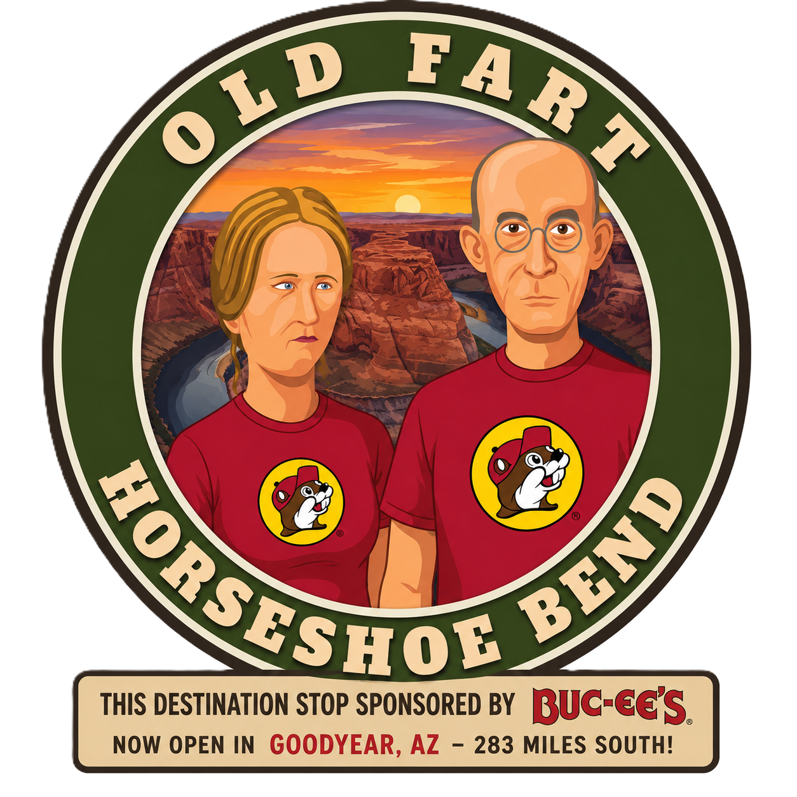
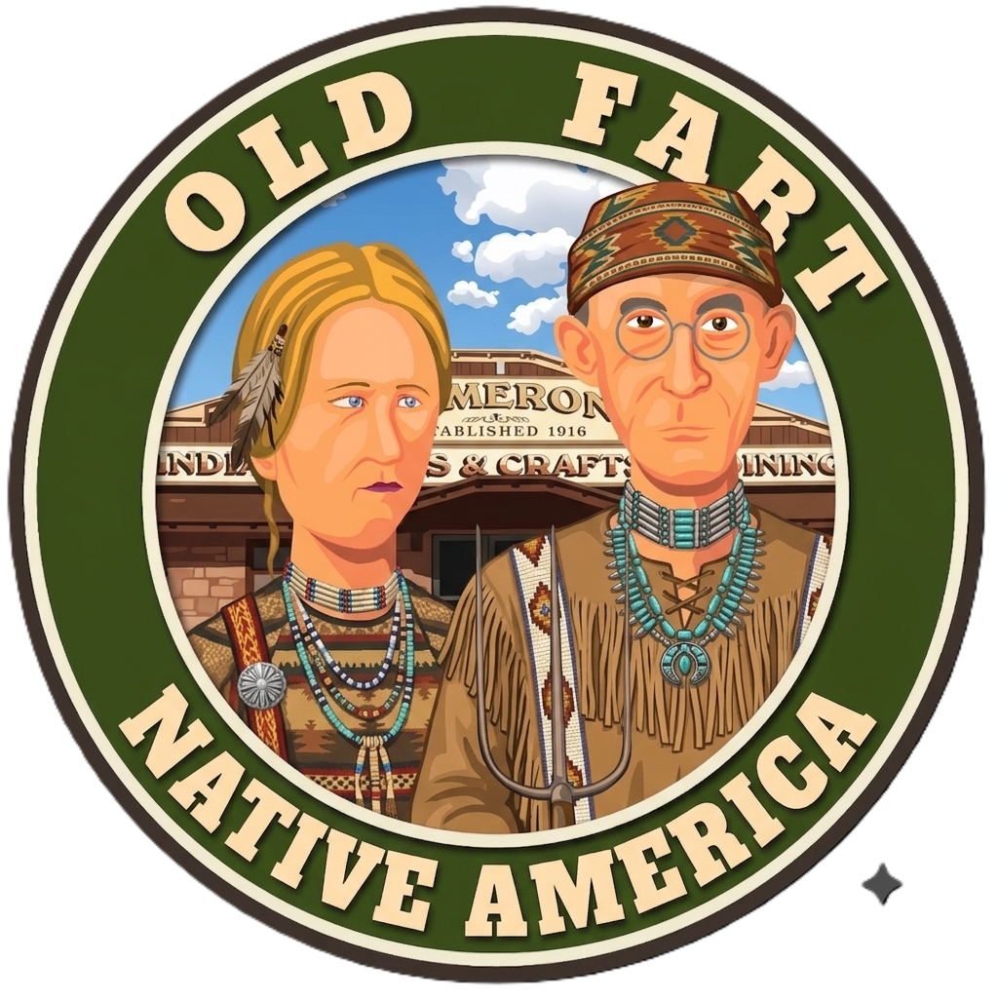
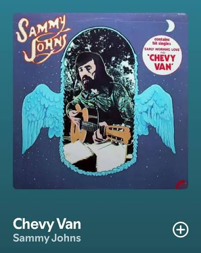

🍳 Breakfast
Harvey House Café
Breakfast in your room or one last meal at the Grand Canyon before departure.
🍳 View Breakfast
Grand Canyon → Cameron → Page • Friday, August 7, 2026

Today we bid farewell to the Grand Canyon and head toward another spectacular canyon landscape altogether.
Along the way, we'll stop for lunch at one of the Southwest's most beloved trading posts—famous for its Navajo tacos—before settling into Page for an evening visit to one of Arizona's most photographed overlooks.
Breakfast in your room or at the Harvey House Café—whichever you prefer.
Then take one last stroll along the South Rim to soak in the view.
Leave by way of Desert View Drive for Cameron.
Approximate drive: 1 hour 15 minutes without stops.
The easternmost developed area on the South Rim is home to the historic Watchtower, built in 1932 and now recognized as a National Historic Landmark.
It offers one final panoramic perspective of the Canyon, including a distant view toward the Colorado River and Marble Canyon.
Enjoy lunch and browse one of Arizona's most famous trading posts.
House specialty: Navajo Tacos.
If you've never had one... today is your chance to fix that.

Approximate drive: 1 hour 15–30 minutes.
Estimated arrival: 3:00–4:00 p.m.
Check into the Hampton Inn & Suites and take some time to relax before heading back out.
The overlook is reached by a 1.5-mile round-trip walk along a gently graded paved path.
🚻 There are no restrooms along the trail, so use the facilities in the parking area before setting out.
💧 The walk isn't difficult... but the desert doesn't care.
Bring water, wear comfortable shoes, and leave the sprint to the overlook to people under thirty.
Sunset: 7:28 p.m.
After two days of national park dining, Bonkers is a welcome change of pace.
Steaks, pasta, seafood, and comfort food in a relaxed atmosphere—exactly the kind of place you'll appreciate after a full day of travel and an evening at Horseshoe Bend.
Harvey House Café
Breakfast in your room or one last meal at the Grand Canyon before departure.
🍳 View BreakfastCameron Trading Post
Navajo tacos and classic Southwestern fare.
🌮 View MenuBonkers Restaurant
Steaks, seafood, pasta, and comfort food after Horseshoe Bend.
🍽️ View MenuCheck in, cool off, and take a break before the evening trip to Horseshoe Bend.
Estimated arrival: 3:00–4:00 p.m.
🏨 Visit Hotel WebsiteIn August, sightseeing after 5:00 p.m. means cooler temperatures, spectacular golden-hour lighting, and one less excuse to marinate yourself in sunscreen. 😎
That does not mean you can skip the water.
Horseshoe Bend is one of those places that looks familiar before you arrive.
You've seen it in advertisements, travel magazines, calendars, computer screensavers, and social-media posts from people pretending they discovered it.
Tonight... you get to stand there yourself.
Just remember: the photograph is optional. Stepping backward while taking it is not recommended.
Grand Canyon → Page
Big landscapes, open road, and the growing realization that the trip is nowhere near finished.
🎵 Play Today's PlaylistSleep in. Enjoy a leisurely breakfast.
Then get ready for one of the most spectacular guided tours of the entire trip.
Tomorrow we enter Upper Antelope Canyon...
where the canyon walls are about to get a whole lot closer.

An actual example of what it has been like for a travel writer and an AI moderator to plan this guide.
Memo to me. We need “Chevy Van” by Sammy Johns in the Road Songs playlist.
Absolutely. “Chevy Van” belongs on the OFT road-songs playlist.
It may be less road-trip anthem than 1970s van encounter, but that has never disqualified anything from an OFT playlist.
They sing about making love in their Chevy Van, which is so NOT OFT that it's classic OFT!
Exactly! The lyrics are all about carefree young romance...
...being listened to by four Medicare-eligible travelers in compression socks, driving a rented minivan toward Monument Valley.
The contrast is what makes it funny.
And, just for the record... if anyone in that van starts reenacting the song, I'm changing the OFT slogan from:
GET OFF YOUR LAWN AND SEE THE WORLD WITH US!
to
PLEASE KEEP YOUR SEAT BELTS FASTENED AT ALL TIMES. 😄
Or... IF THE VAN IS ROCKIN', DON'T BOTHER KNOCKIN'!
Now that is pure OFT.
Then they look at who's actually in the van:
Four retirees. Compression socks. Ibuprofen. A cooler full of Costco snacks. A meticulously planned itinerary.
And they realize the only reason the van is rocking is because Bill is climbing into the third row, Robin is trying to find her readers, Joan is handing out tissues, or John just hit a pothole in Arizona.
IF THE VAN IS ROCKIN'...
WE PROBABLY HIT A CATTLE GUARD.
Yesterday we looked down into one of the largest canyons on Earth.
Tonight we look down at one of the river's most remarkable turns.
Tomorrow...
we walk inside the landscape.